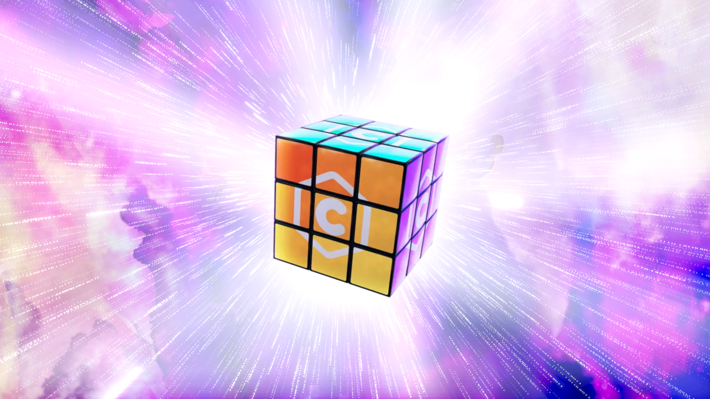
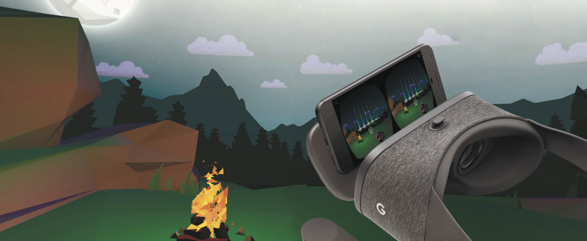
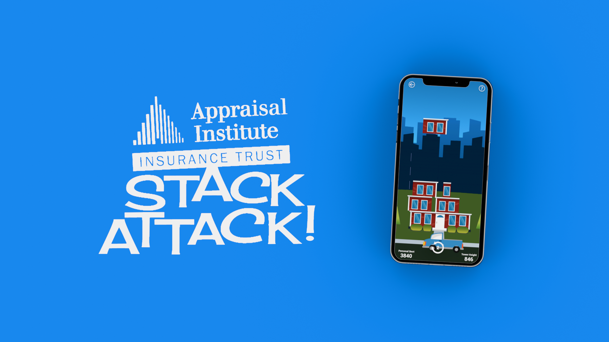
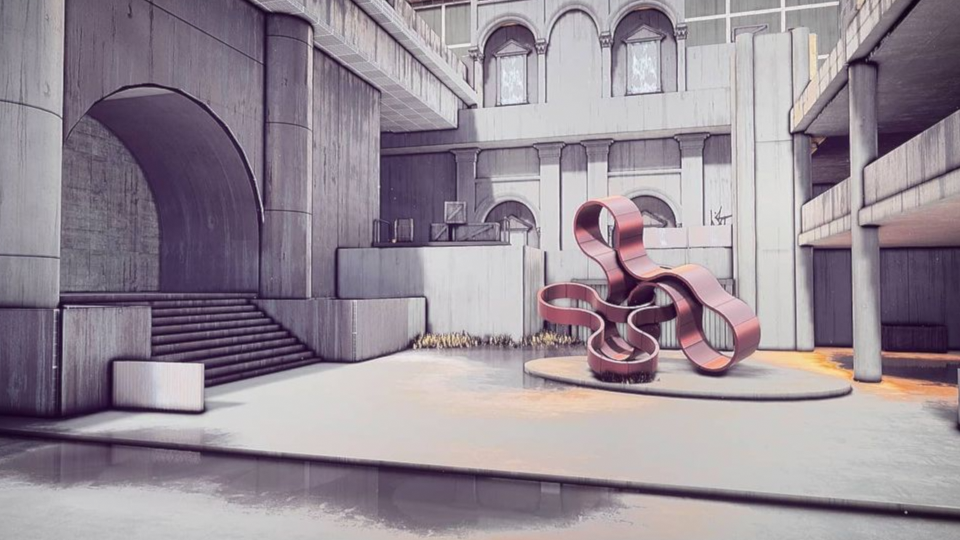

Luke Stilson • Technical Art
Creating solutions that empower
3D artists and developers.
Creating solutions that empower
3D artists and developers.
I believe in bringing high-quality tools to the greater artist community. Developed independently from my work for studios, these tools are the core of my personal workflow, freeing me from costly subscriptions and intrusive data collection prevalent in the digital art world today.
Scripted with Python and released under GNU General Public License v3.0. Dive into the examples and documentation, and feel free to use these tools in your own process.


All-in-one texture baking solution, designed to offer users an intuitive and powerful interface for creating industry-standard texture bakes.


One-click Vertex Animation Texture encoding from Blender to your engine of choice.

Utilize Blender's procedural shading techniques to create game-ready PBR textures and normal maps for Unity and Unreal.

Create animated particles, looping emitters, and sprite sheets for engine use as flipbooks, cards, and sub-emitter animation.


Easily control batch rendering from multiple Blend files and directly preview results.

Easily edit, manipulate, and export images in pixel-perfect mixed 2D/3D space.
I've played a major role in each release I've been involved with, generally working on small development teams where the line between technical art and development is blurred.
With contributions ranging from art creation to complete game development, these releases highlight my flexibility and growth.

Race your collectible Cryptoy NFTs against AI players in this innovative web experience.
Responsibilities: game development, engine rigging & animation, sound design, UI, asset preparation

Unbox any of over 200 unique characters, revealing their rarity and personality in this core experience.
Responsibilities: asset management, VFX, lighting & rendering

A collection of games designed to train Verizon employees on Google Daydream capabilities.
Responsibilities: 3D modeling, animation, sound design, environment art

Physics-based balancing game—part of a marketing campaign for Appraisal Institute Insurance Trust.
Responsibilities: end-to-end solo development, animation, sound design

My time at Arrow International resulted in the successful release of several titles.
Responsibilities: 2D/3D art, in-engine setup, asset management, animation, technical support
Browse my personal miscellaneous projects featuring exploration into game concepts, tools, scripts, shaders, and VFX.

Gameplay Concept A twist on Microsoft's classic Minesweeper, brought to a realistic 3D environment.

Experimental Release | Indie Dev
Tactical freerunning search and destroy.

Asset Creation | Material Creation | Set Dressing | Asset Preparation

Driving aspects of geometry nodes from audio pitch and volume.